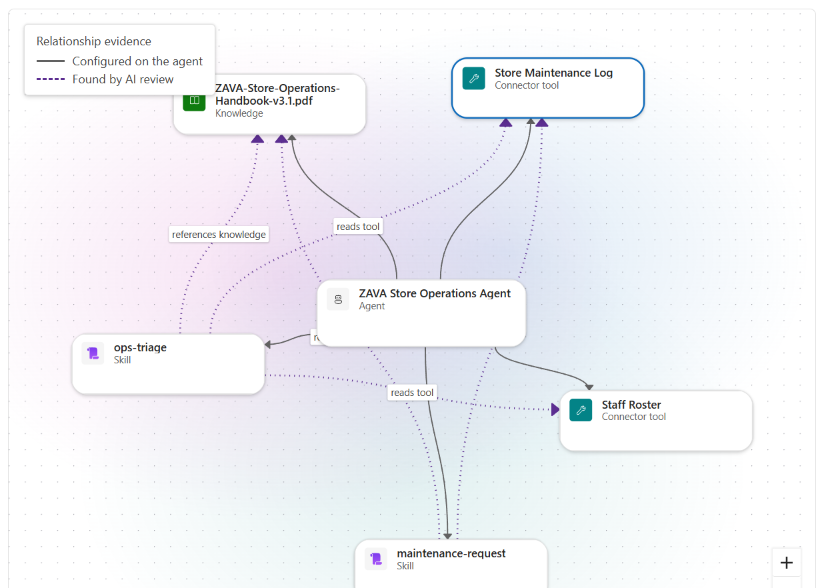

Microsoft experts help you review, debug, optimize, and validate your Copilot Studio
agents, declarative agents, and skills. You use Agent Review Center, a tool you install in your
own environment and keep.
A walkthrough of Agent Review Center (2 minutes 21 seconds).
How the program runs
Three sessions across four weeks. Microsoft experts guide each session, and your team works on the agent in between.
Session 1
1 hour · Week 1
Discovery, tooling setup, and data preparation
Confirm the use case, scope, success criteria, and top concerns. Install Agent Review Center and get the data ready for the review.
You leave with: an agreed scope and a plan for the review.
Session 2
1–2 hours · Week 2
Findings, patterns, and recommendations
Walk through the risk-ranked findings in Agent Review Center, and agree which fixes to make, with the rationale for each.
You leave with: a prioritized list of recommendations and agreed actions.
Between sessions
Week 3
You implement the agreed fixes.
Session 3
1–2 hours · Week 4
Re-run against the baseline
Re-run the review, compare it with your baseline, and identify remaining gaps and follow-ups.
You leave with: a final review summary and next steps.
Beyond
Keep the tool and review your agents whenever you need to.
What Agent Review Center is
It reviews your agents against consistent architecture criteria, and tracks how their scores
change over time.
How a review works
Configuration checks
Rules check how the agent is built: instructions, skills, tools, knowledge, orchestration, and evaluation coverage.
AI-assisted checks
The Review Agent Components flow runs AI-assisted checks through the Agents connector. Their findings are labeled AI generated, so check the evidence before you act.
Runtime analysis
For a Copilot Studio agent, its conversation transcripts show errors, latency, and which knowledge sources it actually uses.
You get a letter grade, a score out of 100, and findings with evidence and fixes. Select Review again after you fix, and compare against your baseline.
Findings you can act on
Each finding shows the evidence, why it matters, how to fix it, and references.
Errors from real conversations
Errors, tool calls, and knowledge searches from your own conversation transcripts.
Knowledge your agent never uses
In this sample review, 348 of 357 configured sources were never cited.
Track progress against your baseline
Each re-run is scored against your first review.

How your agent fits together
The architecture map shows links configured on the agent, and links that only the AI review found.
What you need to bring
What your team puts in, and what Agent Review Center needs.
Your commitment
A named owner with the right access
One person who can work on the agent directly, with about 3–6 hours across the sessions.
Agent Review Center installed
Agreement to install and run Agent Review Center in your own environment. See the installation guide.
An agent with a meaningful user base
In testing, pilot, or production, with real conversations to analyze.
Licenses, capacity, and environment
Copilot Studio
Copilot Studio tenant license, plus a Copilot Studio User License for each person who uses Agent Review Center.
Power Apps Premium
Power Apps Premium coverage for each person who uses Agent Review Center (Premium license, pay-as-you-go, or App Pass).
Copilot Credits
Copilot Credits (Copilot Studio capacity pack or pay-as-you-go billing plan).
Dataverse environment
Standard release.
Install Agent Review Center
Most setup needs a Power Platform admin, and transcripts only build up after recording is on,
so start early.
Steps 1–2 · Prepare the environments
Credits allocated, code apps on, and transcript recording on.
Who: Power Platform admin or environment admin
Step 3 · Allow the connectors
Microsoft Dataverse, Agents, and Power Automate Management, together in the same group.
Who: Power Platform admin
Steps 4–5 · Import the solution and run the setup app
Who: System Administrator in the environment
Steps 6–8 · Share, verify, and run your first review
Assign roles, share the agent and the app, then run the readiness checks.
Who: System Administrator, agent owner, and reviewers
Agent Review Center runs as a Power Apps code app and reads Copilot Studio agents and conversation transcripts from Dataverse.
Environment configurations
Required Agent Review Center environment settings, where to find them and who can set them
Setting
Where
Who can set it
Dataverse environment, standard release
Power Platform admin center > Manage > Environments
Power Platform admin
Copilot Credits allocated to the environment
Power Platform admin center > Licensing > Copilot Studio > Manage capacity
Power Platform admin
Enable code apps: On
Power Platform admin center > Manage > Environments > [environment] > Settings > Product > Features > Power Apps code apps
Power Platform admin or environment admin
Both transcript settings On: “Allow conversation transcripts and their associated metadata to be saved in Dataverse” and “Allow agent owners and editors to see session transcripts…”
Power Platform admin center > Manage > Environments > [environment] > Settings > Product > Features > Copilot Studio agents
Power Platform admin or environment admin
Reviewer roles and permissions
Each reviewer needs all of the following.
Environment Maker
Bot Viewer
Bot Transcript Viewer
Show details about Agent Review Center permissions and configuration setupHide details about Agent Review Center permissions and configuration setup
Purpose
This guide gives the environment settings and security roles that Agent Review Center needs. Agent Review Center uses Power Apps Code Apps and Copilot Studio conversation transcripts.
Before you start
Make sure that the tenant has these items. The tenant admin usually supplies them.
A Copilot Studio tenant license, and a Copilot Studio User License for the user of Agent Review Center.
Power Apps Premium coverage for each user of Agent Review Center. This can be a Power Apps Premium license, pay-as-you-go billing, or an App Pass.
Copilot Credits from a Copilot Studio capacity pack or a pay-as-you-go billing plan.
Agent Review Center setup requirements, where to configure each one, who can configure it, and why it is necessary
Requirement
Where to configure it
Who can configure it
Why it is necessary
Target installation environment · Steps 1–2
Dataverse environment, not preview
Power Platform admin center > Manage > Environments
Power Platform admin
Agent Review Center, Code Apps, and transcripts use Dataverse.
Copilot Credits allocated
Power Platform admin center > Licensing > Copilot Studio > Manage capacity
Power Platform admin
An environment can use prepaid credits only after you allocate them to it.
Power Apps Code Apps on
Power Platform admin center > Manage > Environments > Settings > Product > Features
Power Platform admin or environment admin
This setting lets the environment run code apps.
Agent environment · Steps 3–4
Transcript recording on
Power Platform admin center > Manage > Environments > Settings > Product > Features > Copilot Studio agents
Power Platform admin or environment admin
This setting saves agent session transcripts and metadata in Dataverse.
Agent shared with reviewer
Copilot Studio > agent > Share
Agent owner. A System Administrator assigns roles.
Transcript access applies only to agents that the user creates or that are shared with the user.
Bot Transcript Viewer role
Dataverse environment security roles, or Copilot Studio agent sharing
System Administrator, or an admin with permission to manage environment roles
This role lets the user read conversation transcripts. The Environment Maker role does not give this access.
Target installation environment · Steps 5–6
Solution installed, flows on
Power Apps > Solutions; Power Automate > Solutions > Cloud flows
System Administrator
A flow can run only if its connection references have valid connections.
App role and app sharing
Power Platform admin center > Environments > Users or Teams; Power Apps > Apps > Share
System Administrator; app owner
A user must have table access and a shared app to open Agent Review Center.
1 Prepare the target installation environment
Scope Target installation environment
Do these steps in the environment where you will install Agent Review Center.
Use a Power Platform environment that has a Dataverse database.
Do not use a Dataverse for Teams environment. In this type of environment, Copilot Studio does not save transcripts to the Dataverse transcript table.
Use a standard release environment. Do not use an early release cycle environment. Early release environments get updates first and are for preview use, not for production.
Allocate Copilot Credits to the environment. Go to Power Platform admin center > Licensing > Copilot Studio, and then select Manage capacity.
An environment setting controls Power Apps Code Apps.
Sign in to Power Platform admin center.
Select Manage > Environments.
Select the target installation environment.
Select Settings > Product > Features.
Find Power Apps code apps.
Look at the Enable code apps setting:
On: Code Apps are available in the environment.
Off: Code Apps are not available in the environment.
If the setting is Off, set Enable code apps to On.
If you changed the setting, select Save.
Who can change this setting
A Power Platform admin or an environment admin must change this setting. To change many environments at the same time, use environment groups and rules.
Do these steps in the environment of the agent that you review.
Transcript recording and transcript access are two different items:
Key difference
Transcript recording controls if the system saves conversation data. Transcript access controls who can read this data.
In Power Platform admin center, do these steps:
Select Manage > Environments.
Select the agent environment.
Select Settings > Product > Features.
Go to the Copilot Studio agents section.
Set these two settings to on:
Allow agent owners and editors to see session transcripts from conversation interactions in their agents.
Allow conversation transcripts and their associated metadata to be saved in Dataverse.
Select Save.
Caution
Set the Dataverse transcript setting to on before the review period starts.
This setting controls if the system writes transcripts to the Dataverse transcript table. The system saves transcripts only for conversations that occur after you set it to on.
An environment admin can change this setting for one environment. A System Administrator can apply the environment group rule Accessing transcripts from conversations in Copilot Studio agents. This rule overrides the settings of each environment in the group.
In the agent environment, each reviewer must have three items:
The Environment Maker role
The Bot Viewer role
The Bot Transcript Viewer role
Environment Maker role
A user must have the Environment Maker security role before you can share an agent with the user. This role includes the ChatBotReaders privilege. Users need this privilege to chat with agents in the environment.
The Environment Maker role does not give access to transcripts.
Give Bot Transcript Viewer access
Bot Transcript Viewer is a Dataverse security role. It is not an environment feature setting. By default, only admins have this role.
Give this role to each user who must read conversation transcripts. Assign the role in the agent environment in one of these two ways:
During agent sharing. If the user who shares the agent is a System Administrator, the share panel shows the Environment security roles section. Assign the role in this section.
In Power Platform admin center. Select the user under Access > Users. Then select Manage security roles.
Note
The Environment Maker role alone does not give access to transcripts.
If the agent content is sensitive, give transcript access only to users who have privacy training.
5 Install the solution provided by the Agent Review Center team
Scope Target installation environment
Use an account that has the System Administrator role in the environment.
Before you start, make sure that the data policies of the environment allow all connectors that the solution uses. These connectors include Microsoft Dataverse. Code apps apply data policies when the app starts.
Note: three connectors
The data policies must allow these three connectors together, in the same group: Microsoft Dataverse, Agents, and Power Automate Management. The one-time setup app uses Power Automate Management, and the import fails if it is blocked. See Data policies and connectors in the installation guide.
Import the solution and set the connections
Sign in to Power Apps.
Select the target installation environment.
Select Solutions > Import solution.
Select Browse.
Select the managed solution file.
Select Next.
Examine the solution details.
Select Next.
For each connection reference, create or select a connection. This includes the Microsoft Dataverse connection reference.
Select Import.
Wait until the import is complete.
After the import, do these steps:
Open the solution.
Select Connection references.
Make sure that each connection reference has a valid connection.
If you change a connection reference, select Save.
Make sure that the cloud flows are on
If each connection reference has a connection, the import gives each flow the status that it had at export. Thus, the flows are usually already on. To make sure, do these steps:
Sign in to Power Automate.
Select the target installation environment.
Select Solutions.
Open the Agent Review Center solution.
Select Cloud flows.
Make sure that the Status of each flow is On.
If the status of a flow is Off, select the flow and select Turn on.
Note
The user who imports the solution becomes the owner of all its components. These components include flows and connection references. Select this user carefully.
Pick an agent in testing, pilot, or production with enough real traffic for the findings to
tell you something. We will scope it with you before anything starts.
Questions about the program, whether your agent is a fit, or installing Agent Review Center?
Email the team at
serenaxie@microsoft.com.
Don’t include transcripts or other sensitive data.